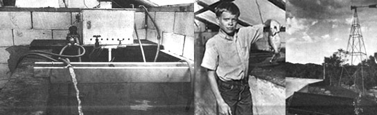

For the benefit of MOTHER's readers who may have missed the previous segments of the series, this is the last of four articles describing the various components of an experimental, underground hydroponic greenhouse and aquaculture unit recently built on my homestead in the mountains of northern New Mexico. The present installment deals with aquaculture.
Aquaculture is the cultivation of fish or other cold-blooded aquatic animals such as mussels, clams and crayfish under optimum controlled conditions. Fish farming-perhaps a more descriptive term-has been practiced for thousands of years in the Orient, and has recently become a profitable business in the United States. Catfish are raised on large farms throughout the South, and in Louisiana crayfish culture has proven to be a profitable commercial venture. In mountainous states such as Idaho, where an abundance of cold running water is available, fish farms provide the market with pan-sized rainbow trout at premium prices.
In this country, aquaculture-like most other farming-is run along agribusiness lines, with an eye toward maximum yields and maximum profits. Fish are "packed like sardines" in ponds or tanks in which the water is constantly circulated, filtered and aerated to keep the inhabitants from dying in their own waste products. These fish feedlots make use of high-protein"chows" manufactured by the major livestock ration companies, and hence bear no relationship at all to the organic low-energy aquaculture operations of the Orient . . . which, interestingly enough, consistently outproduce the "agribiz" methods normally used in America.
I became interested in organic aquaculture in 1971 after reading a series of articles on the subject by Dr. John Todd and Dr. William McLarney in Organic Gardening and Farming magazine. These two researchers, working at the New Alchemy Institute in Woods Hole, Massachusetts, have been experimenting for many years with low-energy organic food-producing methods designed for homesteads and small communities. In an article entitled "Aquaculture on the Organic Farm and Homestead", appearing in the August 1971 issue of OGF, Dr. McLarney summed up the rationale behind fish farming:
The best argument for aquaculture is based on the ever-increasing need for protein foods. Fishes and aquatic Invertebrates are far more efficient food converters than their warm-blooded counterparts, since they need expend little or no energy supporting their weight or maintaining their body temperatures. They are thus capable of producing more protein per unit area from the same amount of food.
Compare Robert Rodale's comment on the food-converting efficiency of warm-blooded animals ( OGF, April 1971):
Warm-blooded land animals are monstrously Inefficient producers of nutritious food, and their meat will become more and more of a luxury as the population Increases and good agricultural land becomes more scarce. Almost 90 percent of the food given to beef cattle, for example, is "wasted" because it is used to keep up the animals' body temperature. The harvest of protein food In the form of meat Is small In return for the corn, grain and hay that Is Invested In supporting the animals.
[emphasis DeKorne's]
Readers who remember my arguments in favor of (organic) 'hydroponic gardening in MOTHER NO. 29 will perhaps recognize, at this point, a recurring theme which underlies the whole concept of a homemade ecosystem such as my underground greenhouse/fish farm: the attainment of maximum efficiency within the framework of natural processes. Thus, if hydroponic methods have the potential of more than tripling the harvest of agricultural crops, and if organic aquaculture can produce similar yields of animal protein, then it should be possible for a family or small community to produce a major portion of its nutritional requirements from a very small area of ground. Furthermore, if such food-producing units are designed to make use of only natural energy sources such as the wind, sun and composted wastes, then the system will be both self-supporting and consistent with what must become the world's philosophy for survival: Get more from less.
Our underground greenhouse was completed in October of 1973, and the wind generator and solar panel were installed in April of 1974. The original program called for about 100 catfish fingerlings to be planted in the fish tank, but limited finances-coupled with the unavailability of commercially raised catfish fry in lots of less than 1,000- necessitated an alternative plan. Consequently, last May, my son, a friend and I filed the barbs off of several fishhooks, half filled two 55-gallon drums with water and set off in our Volkswagen bus for the nearest pond, about 40 miles away. Within two hours we managed to catch 55 bluegill sunfish, which we quickly transported home and stocked in our 1,400-gallon tank. The fish survived the transplant in good order, with no casualties.
The original concept of the growhole, if you'll remember, was to raise earthworms as fish food. (The worm castings were to be leached with water to make up the organic hydroponic solution for the plants.) In a letter from Dr. McLarney I learned that recent research by other experts has suggested that earthworms are superior nutritionally to commercial trout and catfish rations, so I was on good grounds in using them to feed my bluegills. Further encouragement came from Philip and Joyce Mahan, authors of an article entitled "Raising, Catfish in a Barrel", which appeared in the November 1973 issue of Organic Gardening and which described an earthworm feeding system for catfish. Since I already had four 55-gallon drum halves planted with earthworms and compost, I felt that I was well on my way toward becoming a fish farmer.
Then what I like to call the "free lunch rule" began to assert itself. (It's a basic truth of ecology that "there is no such thing as a free lunch" . . . and indeed, in working with my little ecosystem, I have had that law enforced on me many times. The fact is inescapable: You can't get something for nothing.)
What happened was that the fish were constantly hungry. The more I fed them, the more they ate, until my supply of earthworms couldn't keep up with the demand. Then I reread the Mahan article and learned that the authors are commercial earthworm raisers . . . an extremely significant fact that I hadn't previously considered.
Obviously, my four little compost bins were totally inadequate for producing the number of worms I needed. If one figures a minimum diet of one worm per fish per day, one finds he is using-assuming 55 fish-385 per week, 1,540 per month and 9,240 every six months. At a cost (in my area) of $20.00 per 7,000 earthworms, those fish dinners began to be anything but a "free lunch". The long-term solution, of course, is to create a much larger worm farm . . . one in which the creatures' natural reproduction is able to keep up with the need for fish food.
Meanwhile, in an effort to ease the demand on my hard-pressed earthworms, I attached a 12-volt automobile taillight bulb to the wind-electric system, hung it over the fish tank each night last summer, left the door and all vent flaps open and used the light to attract insects for the fish to 'eat. This system worked very well. Although I was apprehensive about bringing such visitors into the greenhouse, I needn't have worried. The bluegills must have gotten virtually every one of them, because I had no problems with insect damage to the plants. It became something of a pastime to "watch the fish eat". Each evening one could see them grouped in a huge circle around the light, waiting for any bug foolish enough to come within striking distance. Each morning a thin film of "leftovers"-insect wings, legs, etc.-covered the water.
That solution worked just fine for the summer months, but when the nights began to cool off and the bug population dwindled, it was back to an earthworm diet for the fishes. At this writing (October 1974) the worm supply which had accumulated during the summer is about exhausted, and the bluegills must soon be harvested . . . without, I'm sorry to say, having gained the size or weight I had hoped for.
An additional unforeseen problem is that the tank filtration system which appeared in the drawing of the ecosystem in MOTHER NO. 28 has proven to be impractical. This, you'll remember, consisted of three 55-gallon drums placed outside the greenhouse and filled with calcium carbonate (crushed oyster shells). The water from the fish tank was to be run through this filter in order to remove the growth-inhibiting metabolites produced by the fish. The necessity for such a precaution is explained by Dr. McLarney in Newsletter No. 2 of The New Alchemy Institute:
The rationale for recirculating and filtering the pond water has to do with the tendency of fish at high population densities to emit growth-inhibiting metabolites. When concentrations of these natural chemicals are high, as they normally would be in a heavily stocked culture system such as ours, growth may virtually cease, though health, external appearance and feeding of the fish are normal. This situation may of course be corrected by enlarging the pond or thinning the fish population, but a more practical course is to remove chemically the growth-inhibiting compounds by means of a bacterial titter analogous to the subsand filters familiar to aquarium hobbyists. In this type of filter, water is pumped from the pond through a bed of oystershell or other calcareous material and back Into the pond The shell acts physically to remove particulate matter and chemically to buffer pH, but its principal function is as a substrate for the growth of bacteria which chemically break down the growth-inhibiting substances. This type of filter was first used in practical fish culture in Japan in the early 1950's, and has since been applied in a variety of aquaculture systems, where it has increased production by factors of 10-1,000 over stagnant ponds.
The problem I encountered in using an external filter system of 55-gallon drums had mainly to do with the fact that the small 12-volt bilge pump used to circulate the water was not powerful enough to push the liquid through three drums full of crushed oystershell and through a solar heat collector. The solution to this problem is a simple one, but will require some modifications to the tank: A section of the fish container will be walled off with some kind of screening structure so as to contain the crushed oystershell, yet still allow the water to enter. The liquid will then be pumped from the filter through the solar panel and back to the tank. In this way, the pump won't be required to work so hard, since it Will have only to push the filtered water through the solar collector.
Speaking of solar collectors, the one I'm using is a "Solarator", a commercially manufactured unit designed for heating swimming pools. This product was described in my article in MOTHER NO. 25. The manufacturer claims that it will warm up to 10,000 gallons of water . . . but, perhaps significantly, he doesn't state to what temperature. At any rate, I've found that the Solarator adds very little to the heat in my 1,400-gallon tank. When the sun is shining the thermometer will rise as much as five degrees in one day whether the solar panel is being used or not. Since the device seemed to be making no contribution at all to the tank's warmth, I finally stopped using it altogether. I intend to install a larger panel of a different type when finances permit.
Thus you can see that, in practice, my ecosystem has run up against some snags not foreseen in the planning stage. This by no means indicates that the concept is invalid, since each problem is relatively minor and capable of easy correction. As I observed in my wind generator article in MOTHER NO. 30, few experiments are 100 percent successful the first time they're tried. In the meantime, in its first year of operation, our little setup has already provided our family of four with many, many meals of fresh produce . . . and almost two months after the first killing frost wiped out our garden, we're still eating fresh tomatoes from the greenhouse. If you've priced tomatoes in the supermarkets lately, you know that that alone is something to brag about!
Organic Gardening and Farming magazine, April 1971, "We Must Learn to Walk Through the Water", Robert Rodale, pg. 32.
Ibid., August 1971, "An Introduction to Aquaculture on the Organic Farm and Homestead", William O. McLarney, Ph.D., pg. 71.
Ibid., November 1971, "The Farm Pond Revisited", William O. McLarney, Ph.D., pg. 88.
Ibid., January 1972, "The Backyard Fish Farm", John Todd, Ph.D., and William O. McLarney, Ph.D., pg. 99.
Ibid., October 1973, "Raising Catfish in a Barrel", Philip and Joyce Mahan, pg. 112.
SPECIAL NOTE: The pamphlet, Hydroponics by Steve Fox-mentioned prominently in the second Installment of JIM DeKorne's series on building an ecosystem in MOTHER NO. 29-is apparently no longer available.
|
 |
|
|